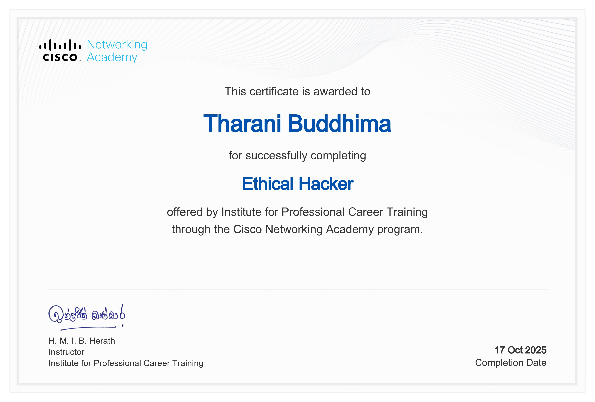
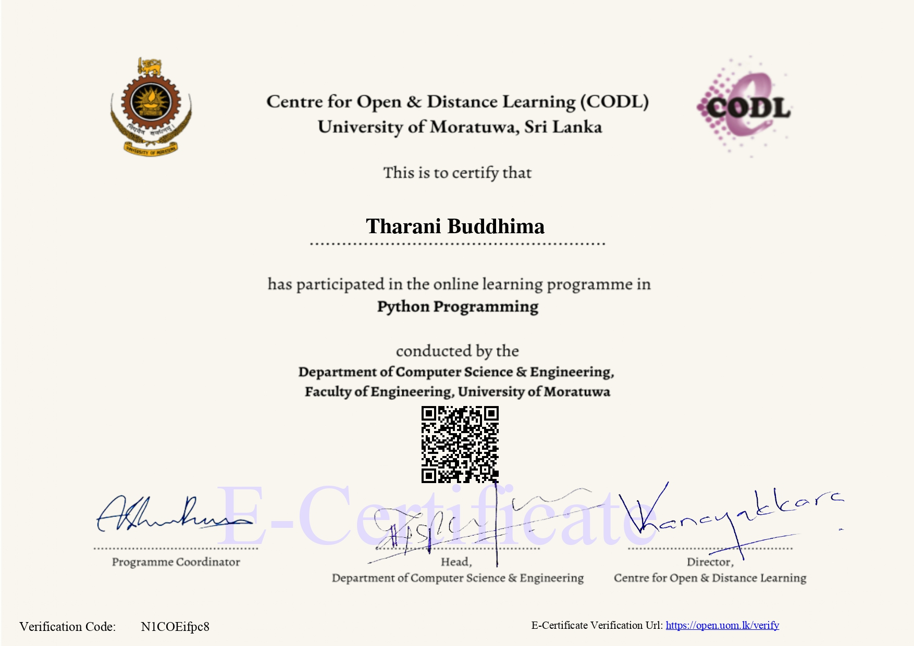

Enterprise Password Audit & Security Assessment
A practical password security assessment project focused on evaluating password strength and identifying security weaknesses.
View on GitHub →I am building practical cybersecurity skills through hands-on projects in network security, vulnerability assessment, web application security, traffic analysis and password security.

I am an undergraduate studying Physical Science ICT at the University of Sri Jayewardenepura, with a strong career focus on cybersecurity and ethical hacking.
My cybersecurity learning is supported by hands-on projects involving network reconnaissance, packet analysis, vulnerability assessment, web application security and password security.
I believe in learning cybersecurity through practical experimentation, authorized security testing and continuous improvement of technical skills.
Technical skills developed through hands-on cybersecurity projects, academic work, and practical learning.
Hands-on security projects covering network discovery, traffic analysis, web application security, and password security.
Selected projects that best demonstrate my practical cybersecurity learning.
A practical password security assessment project focused on evaluating password strength and identifying security weaknesses.
View on GitHub →A web security testing project focused on identifying authorization weaknesses and access control issues.
View on GitHub →Network traffic analysis project using Wireshark to examine FTP communications and identify security-relevant information.
View on GitHub →Practical security project exploring password brute-force techniques and password protection concepts.
View on GitHub →Hands-on password security project using John the Ripper to study password cracking and hash security.
View on GitHub →Network analysis project focused on examining traffic patterns and identifying suspicious or potentially malicious activity.
View on GitHub →Practical network discovery project using Nmap to explore hosts, ports, and services in a network environment.
View on GitHub →Network scanning project exploring Nmap techniques for discovering and assessing multiple targets.
View on GitHub →Practical port scanning project using Nmap to investigate available ports and network services.
View on GitHub →Network traffic analysis project using Wireshark to inspect packets and understand network communication.
View on GitHub →Wireshark-based analysis of suspicious network traffic patterns and security-relevant packets.
View on GitHub →Traffic analysis project focused on examining login-related network communications using Wireshark.
View on GitHub →Practical web application security project exploring SQL injection vulnerabilities and testing concepts.
View on GitHub →Web security testing project using Burp Suite to intercept and examine HTTP login requests.
View on GitHub →Practical web security analysis focused on examining application sessions and HTTP communication with Burp Suite.
View on GitHub →Web application security testing focused on identifying weaknesses in authorization and access control.
View on GitHub →Practical password security exercise using John the Ripper in a Linux environment.
View on GitHub →Password security exercise exploring password recovery techniques against protected ZIP archives.
View on GitHub →Practical password security exercise involving protected RAR archives and password recovery techniques.
View on GitHub →Practical security exercise exploring password recovery against password-protected PDF files.
View on GitHub →My academic background, cybersecurity training, and technical certifications.
Undergraduate studies combining physical sciences, information and communication technology, mathematics, and computing-related knowledge.

Completed Certified Ethical Hacker training covering ethical hacking and cybersecurity concepts.

Completed ethical hacking training covering cybersecurity concepts and practical security topics.

Completed Python programming training covering programming fundamentals and Python development.
Interested in cybersecurity, ethical hacking, or collaboration? Feel free to connect with me.
Open to cybersecurity internships, learning opportunities, and professional connections.
Contact Me →